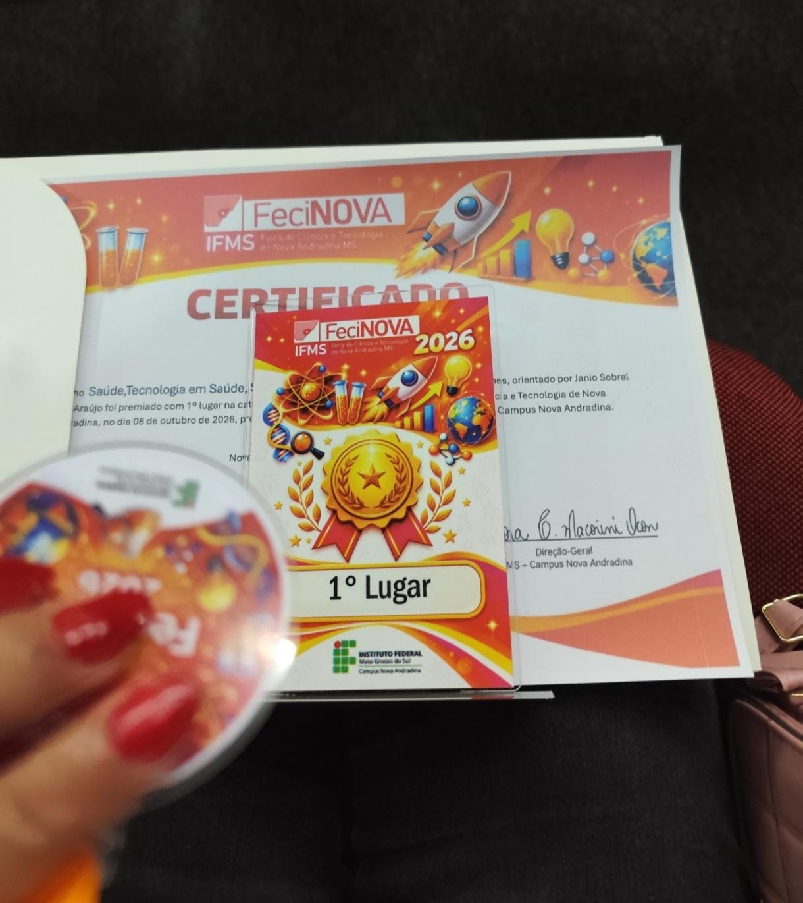

Ensino médio com técnico em informática
Atividades de criação de páginas utilizando HTML, CSS e JavaScript.
PORTFÓLIO ACADÊMICO · 2026
Estudante de Informática, interessada em tecnologia, desenvolvimento web e criação de soluções digitais.
Conheça meus projetos ↗️01 — SOBRE
Sou estudante do curso Técnico em Informática no Instituto Federal. Tenho interesse em tecnologia, em áreas diversas como saúde e moda.
Durante minha formação, desenvolvo atividades acadêmicas e projetos.
Nome
Taviny Sanches
Curso
Técnico em Informática
Instituição
Instituto Federal
02 — FORMAÇÃO
Atividades de criação de páginas utilizando HTML, CSS e JavaScript.
Prática de desenvolvimento de uma API para um catálogo de filmes.
Protótipo de um app, pré-consulta: Relata +. Premiado em primeiro Lugar na área "Ciências Biológicas e da Saúde".
03 — PROJETOS
Projeto acadêmico de criação de uma API para um catálogo de filmes, utilizando Node.js.

Protótipo de um app, pré-consulta: Relata +. Premiado em primeiro Lugar na área "Ciências Biológicas e da Saúde".
04 — EXPERIÊNCIAS
Espaço para registrar feiras, apresentações, eventos e premiações dos quais participei.
As informações desta seção serão atualizadas conforme minhas participações.
05 — PORTFÓLIO WEB
Página desenvolvida durante os estudos de HTML e CSS.
Conhecer projetos ↗️Projeto de API em desenvolvimento para praticar conceitos de programação.
Ver descrição ↗️06 — CONHECIMENTOS
07 — CONTATO
Entre em contato ou conheça meus projetos.